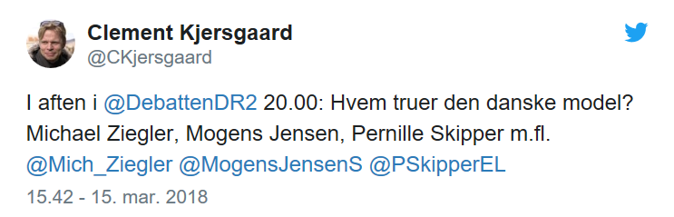
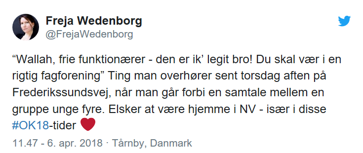
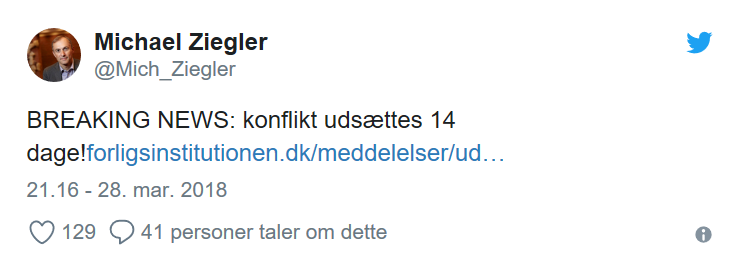
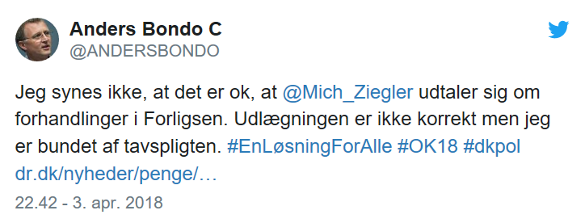
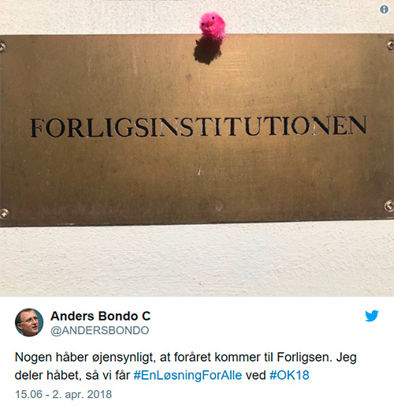
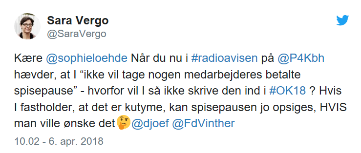
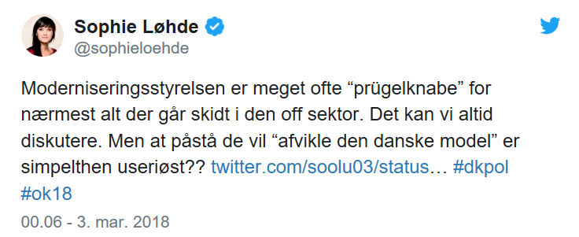
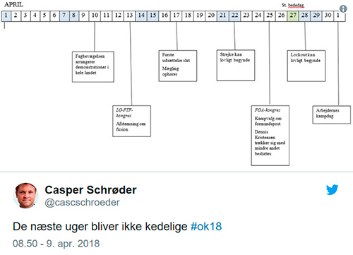

Hvorfor skal der være lockout? #OK18
Det er nu heller ikke sikkert, men lige for tiden kastes der rundt med trusler om strejke og lockout til alle sider. Hvorfor?
Bare rolig. Her kommer din guide til overenskomstforhandlingerne 2018.
Når vi snakker ok18 er det vigtigt at stille 5 spørgsmål:
- Hvad er overenskomst og hvorfor bliver de ved med at snakke om den danske model?
- Hvad skete der lige i 2013?
- Musketer-eden – hvad fanden er det?
- Er jeg sur på foligskvinden, Sophie Løhde eller moderniseringsstyrelsen? Hvad skal der ske nu?
Hvad er overenskomst og hvorfor bliver de ved med at snakke om den danske model?
DEN DANSKE MODEL.
Som det lille unikke snefnug Danmark er så har vi selvfølgelig vores egen model. Den hedder Den Danske Model – og den er verdensberømt.
Den beskriver det danske arbejdsmarked.
I Danmark går man ikke til regeringen hvis man har problemer med sin arbejdsplads – de bestemmer næsten ingenting på det danske arbejdsmarked.
I stedet går man til sin fagforening.
Fagforeningen er en klub for dig og alle de andre, der arbejder med det som du gør.
På den måde kan I mødes og snakke om alle de ting, der er uretfærdige på jeres arbejdsplads.
Dem I arbejder for, arbejdsgiverne, har også klubber. De hedder arbejdsgiverorganisationer.
Mange er glade for Den Danske Model. De føler, at det er bedre end hvis regeringen bare gik ind og lavede en masse love, der bestemte hvordan de skulle arbejde.
OVERENSKOMST.
Når man bliver enige om løn, arbejdstid, pension osv.
Forestil dig, at du levede i gamle dage og du skulle ud og finde et job. Du går måske op til en fabriksejer og han tilbyder dig 10 kr. i timen.
Du siger: Det kan jeg ikke, for jeg har 12 børn og en kone med tuberkulose. Desværre får du ikke jobbet, for han kan bare ansætte en anden.
Så kommer fagforeningerne buldrende. Nu er det ikke bare en der ikke vil arbejde for 10 kr. i timen – det er alle!
Alle er med i fagforeningen, alle vil have 100 kr. i timen og hvis de ikke får det så strejker de – det har de nemlig lært da de var på ferie i Frankrig.
Fabriksejeren samler sine venner. De siger: Det er for meget. Hvad siger I til 70 kr. i timen? Arbejderne siger: Det er fint.
Det er hvad man kalder en overenskomstforhandling. Ingen fik helt hvad de ville have og på den måde er alle lidt mere tilfredse.
HVEM ER MED?
I 2018 forhandles der om alle de offentlige ansattes arbejdsvilkår. Det er dem ansat af kommunerne, regionerne og staten.
Forhandlerne for arbejdsgiverne er:
- Innovationsminister Sophie Løhde assisteret af moderniseringsstyrelsen
- Finansministeriet
- Kommunernes Landsforening
- Det Regionale Lønnings- og Takstnævn (Den egentlige arbejdsgiver er Danske Regioner, men der er noget ligegyldigt juridisk bøvl der gør, at de ikke må deltage)
Forhandlerne for lønmodtagere:
- Offentlige Ansattes Organisationer (OAO)
- Akademikerne (AC)
- Stats- og Kommunalt Ansattes Forhandlingsfælleskab (SKAF)
- Landsorganisationen i Danmark (LO)
- FTF (Funktionærerne og Tjenestemændenes Fællesråd)
- Sundhedskartellet,
- FOA (Forbundet af offentlige ansatte)
– tænk på en hvilken som helst sammensætning af bogstaver, så er de der nok.
Hvad skete der lige i 2013?
LÆRERLOCKOUT.
Måske husker du lærerlockouten i 2013? Nå, men det gør lærerne.
I 2010 fandt regeringen nemlig ud af, at lærerne kun brugte 40% af deres arbejdstid på at undervise.
For regeringen var det simpelthen ikke godt nok så de lavede lige en indenom finte og lockoutede lærerne, der ikke ville sige ja til den nye arbejdstidsaftale.
Selvfølgelig var det ikke officielt dem der gjorde det (de er jo regeringen og blander sig ikke i overenskomstforhandlinger). De sagde bare, at det var Kommunernes Landsforenings ide.
Da der var gået 25 dage sagde regeringen så: ”Øv-bøv, nu gider vi ikke lege mere” og lavede så et lovindgreb.
Så var det også bare lige meget hvad fagforeningerne og lærerne sagde, ah hvor er det godt at sidde i regeringen.
Men hvorfor snakker vi stadig om det? Jo på grund af…
Musketer-eden – hvad fanden er det?
MUSKETER-EDEN.
Danmarks lærerforening og deres golden boy, Anders Bondo Christensen, er stadig rimelig mopsede over hvad der skete i 2013.
Derfor er de løbet til de andre faggrupper og har råbt med dommedag i stemmen: ”Det skete for os, det kunne ske for jer!”.
Alle faggrupperne er derfor blevet så bange, at de straks svor en musketer-ed – eller en solidaritetspagt eller den ting der gør, at vi ikke kan komme nogen vegne med forhandlinger. Kært barn har mange navne.
Alle blev enige om, at før noget andet kan diskuteres skulle alle først være enige om lærernes arbejdstidsaftale.
Man skulle ellers tro, at man som lærer vidste, at hvis du ikke kan svare på spørgsmålet, så skal man bare gå videre og komme tilbage til det senere.
OPHÆVELSE.
Den 22. januar var Bondo Christensen ude og meddele at musketer-eden var ophævet og man kunne gå i gang med det de kalder ”reelle forhandlinger”.
Men de virker til, at alle ikke helt har fået beskeden, heller ikke Bondo Christensen selv?
Det er nærmest umuligt, at finde ud af hvilke aftaler stadig er gældende – og tavshedspligten som forhandlingspaterne er under gør det ikke nemmere.
Andre punkter som musketererne ville fokusere på under forhandlingerne er, at de offentliges løn følger med lønnen i den private sektor og at de kan beholde deres betalte spisepause.
Er jeg sur på foligskvinden, Sophie Løhde eller moderniseringsstyrelsen?
FOLIGSKVINDEN.
Du skal ikke være sur på forligskvinden.
Hun hedder Mette Christensen og det er hende der skal få arbejdsgiverne og lønmodtagerne til at lege sammen igen, efter de har sat sig over i hver sin sandkasse for at surmule.
Hvis de ikke kan blive enige og lave en aftale – indgå forlig – så kommer hun og laver en mælingsskitse.
Det er et forslag til en anden aftale, som måske ikke var helt det parterne ville have, men tættere på end før.
SOPHIE LØHDE.
Sophie Løhde gik ind til forhandlingerne med orderne ”dårlig stemning” skrevet i panden.
Dels fordi hun sidder i regeringen og hun nu skal stille sig uden for det politiske og tage rollen som arbejdsgiver og dels fordi hun sidste år udtalte at, de offentlig ansatte var grådige.
Noget der sjovt nok ikke faldt i god jord hos de offentligt ansatte.
MODERNISERINGSSTYRELSEN.
Du kan sagtens være sur på modernisringsstyrelsen – det er der mange der er.
Det er dem der skal forhandle overenskomst på statens vegne. Samtidig skal de stå for, at den offentlige sektor drives billigt og effektivt.
De modtager en del kritik for kun at kigge på grafer og regneark mens de griner ondt af deres stakkels ansatte.
Hvad skal der ske nu?
FORLIG.
Fedt! De er endelig blevet enige om en aftale og alle kan fortsætte som de plejer.
STORKONFLIKT.
De kan slet ikke finde ud af det. Ingen vil give sig. Ingen er tilfredse med forligskvindens mælingsskitser.
Der kommer strejke og lockout og det kan ende med et lovindgreb fra regeringen. Noget som mange mener svækker Den Danske Model.
